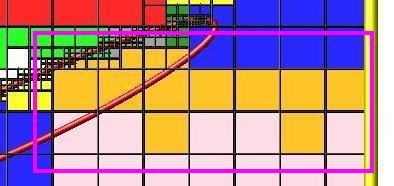

global command
Syntax:
global keyword values ...
one or more keyword/value pairs
keyword = fnum or nrho or vstream or temp or field or surfs or surfgrid or surfmax or splitmax or surftally or gridcut or comm/sort or comm/style or weight or particle/reorder or mem/limit
fnum value = ratio ratio = Fnum ratio of physical particles to simulation particles nrho value = density density = number density of background gas (# per length^3 units) vstream values = Vx Vy Vz Vx,Vy,Vz = streaming velocity of background gas (velocity units) temp values = thermal thermal = temperature of background gas (temperature units) field values = fstyle args fstyle = none or constant or particle or grid field arg = none constant args = mag ex ey ez mag = magnitude of field acceleration (acceleration units) ex,ey,ez = direction vector which the field acts along particle arg = fixID fixID = ID of fix that computes per particle field components grid args = fixID Nfreq fixID = ID of fix that computes per grid cell field components Nfreq = update field values every this many timesteps surfs value = explicit or explicit/distributed or implicit explicit = surfs defined in read_surf file, each proc owns copy of all surfs explicit/distributed = surfs defined in read_surf file, each proc owns only the surfs for its owned_ghost grid cells implicit = surfs defined in read_isurf file, each proc owns only the surfs for its owned+ghost grid cells surfgrid value = percell or persurf or auto percell = loop over my cells and check every surf persurf = loop over my surfs and cells they overlap auto = choose percell or persurf based on surface element and proc count surfmax value = Nsurf Nsurf = max # of surface elements allowed in single grid cell splitmax value = Nsplit Nsplit = max # of sub-cells one grid cell can be split into by surface elements surftally value = reduce or rvous or auto reduce = tally surf collision info via MPI_Allreduce operations rvous = tally via a rendezvous algorithm auto = choose reduce or rvous based on surface element and proc count gridcut value = cutoff cutoff = acquire ghost cells up to this far away (distance units) comm/sort value = yes or no yes/no = sort incoming messages by proc ID if yes, else no sort comm/style value = neigh or all neigh = setup particle comm with subset of near-neighbor processor all = allow particle comm with potentially any processor weight value = wstyle mode wstyle = cell mode = none or volume or radius or radius/only particle/reorder value = nsteps nsteps = reorder the particles every this many timesteps mem/limit value = grid or bytes grid = limit extra memory for load-balancing, particle reordering, and restart file read/write to grid cell memory bytes = limit extra particle memory to this amount (in MBytes) optmove value = yes or no yes/no = use optimized particle move if yes, else use regular move
Examples:
global fnum 1.0e20
global vstream 100.0 0 0 fnum 5.0e18
global temp 1000
global weight cell radius
global mem/limit 100
global field constant 9.8 0 0 1
Description:
Define global properties of the system.
The fnum keyword sets the ratio of real, physical molecules to simulation particles. E.g. a value of 1.0e20 means that one particle in the simulation represents 1.0e20 molecules of the particle species.
The nrho keyword sets the number density of the background gas. For 3d simulations the units are #/volume. For 2d, the units are effectively #/area since the z dimension is treated as having a length of 1.0.
Assuming your simulation is populated by particles from the background gas, the fnum and nrho settings can determine how many particles will be present in your simulation, when using the create_particles or fix emit command variants.
The vstream keyword sets the streaming velocity of the background gas.
The temp keyword sets the thermal temperature of the background gas. This is a Gaussian velocity distribution superposed on top of the streaming velocity.
The field keyword adds an additional external field term which can included in the motion of particles. The fstyle argument can be none or constant, particle, or grid. Note that only one of these can be set by the global command. If the field keyword is specified multiple times, only the last one has an effect.
The none setting turns off any external field setting previously specified. It is the default.
The constant setting is for a field that has no spatial or time dependence; the same field vector acts on all particles. Gravity is an example of a constant external field. The mag arguement sets the magnitude of the field. The (ex,ey,ez) components specify the direction the field acts in. The components do not need to be a unit vector; the code converts them into a unit vector internally. Note that a z-component cannot be used for 2d simulations.
The particle setting is for a field that is computed on a per particle basis, depending on the position or other attributes of each particle. A spatially- or time-dependent magnetic field, acting on the magnetic moment of each particle, is an example of a variable external field. The fixID argument is the ID of a fix which computes the components of the field vector for each particle. These may alter both the position and velocity of each particle when it is advected each timestep.
See the doc page for the fix field/particle command for the only current fix in SPARTA which is compatible with the particle setting.
The grid setting is for a field that is computed on a per grid cell basis and applied to all the particles in the grid cell. A spatially- or time-dependent magnetic field which is coarsened to act at the resolution of grid cells is an example of a per grid cell external field. The fixID argument is the ID of a fix which computes the components of the field vector for each grid cell. These may alter both the position and velocity or particles in the grid cell when they are advected each timestep. The Nfreq argument specifies how often to re-compute the per grid cell field vectors. For a field that has no time dependence you should set Nfreq to zero; the field will only be computed once at the beginning of each simulation run. For a field with time-dependence you can choose how often to recompute the field, depending on how fast it varies.
See the doc page for the fix field/grid command for the only current fix in SPARTA which is compatible with the grid setting.
Note that there is a tradeoff between the particle and grid options. For the particle option the field must be computed every timestep for all particles; the field values are accurately computed at precisely each particle's position but it is an expensive operation. For the grid option the field is only computed once at the beginning of a run or once every Nfreq timesteps. Even if it is computed every timestep, the number of grid cells is typically much smaller than the number of particles. However the accuracy of the field applied to each particle is more approximate than for the particle option. This is because the field applied to each particle is the value it has at the center of the particle's grid cell.
The surfs keyword determines what kind of surface elements SPARTA uses and how they are distributed across processors. Possible values are explicit, explicit/distributed, and implicit. See the Howto 6.13 section of the manual for an explantion of explicit versus implicit surfaces. The distributed option can be important for models with huge numbers of surface elements. Each processor stores copies of only the surfaces that overlap grid cells it owns or has ghost copies of. Implicit surfaces are always distributed. The explicit setting is the default and means each processor stores a copy of all the defined surface elements. Note that a surface element requires about 100 bytes of storage, so storing a million on a single processor requires about 100 MBytes.
The surfgrid keyword determines what algorithm is used to enumerate the overlaps (intersections) between grid cells and surface elements (lines in 2d, triangles in 3d). The possible settings are percell, persurf, and auto. The auto setting is the default and will choose between a percell or persurf algorithm based on the number of surface elements and processor count. If there are more processors than surface elements, the percell algorithm is used. Otherwise the persurf algorithm is used. The percell algorithm loops over the subset of grid cells each processor owns. All the surface elements are tested for overlap with each owned grid cell. The persurf algorithm loops over a 1/P fraction of surface elements on each processor. The bounding box around each surface is used to find all grid cells it possibly overlaps. For large numbers of surface elements or processors, the persurf algorithm is generally faster.
The surfmax keyword determines the maximum number of surface elements (lines in 2d, triangles in 3d) that can overlap a single grid cell. The default is 100, which should be large enough for any simulation, unless you define very coarse grid cells relative to the size of surface elements they contain.
The splitmax keyword determines the maximum number of sub-cells a single grid cell can be split into as a result of its intersection with multiple surface elements (lines in 2d, triangles in 3d). The default is 10, which should be large enough for any simulation, unless you embed a complex-shaped surface object into one or a very few grid cells.
The surftally keyword determines what algorithm is used to combine tallies of surface collisions across processors that own portions of the same surface element. The possible settings are reduce, rvous, and auto. The auto setting is the default and will choose between a reduce or rvous algorithm based on the number of surface elements and processor count. If there are more processors than surface elements, the reduce algorithm is used. Otherwise the rvous algorithm is used. The reduce algorithm is suitable for relatively small surface elememt counts. It creates a copy of a vector or array of length the global number of surface elements. Each processor sums its tally contributions into the vector or array. An MPI_Allreduce() is performed to sum it across all processors. Each processor than extracts values for the N/P surfaces it owns. The rvous algorithm is faster for large surface element counts. A rendezvous style of communication is performed where every processor sends its tally contributions directly to the processor which owns the element as one of its N/P elements.
The gridcut keyword determines the cutoff distance at which ghost grid cells will be stored by each processor. Assuming the processor owns a compact clump of grid cells (see below), it will also store ghost cell information from nearby grid cells, up to this distance away. If the setting is -1.0 (the default) then each processor owns a copy of ghost cells for all grid cells in the simulation. This can require too much memory for large models. If the cutoff is 0.0, processors own a minimal number of ghost cells. This saves memory but may require multiple passes of communication each timestep to move all the particles and migrate them to new owning processors. Typically a cutoff the size of 2-3 grid cell diameters is a good compromise that requires only modest memory to store ghost cells and allows all particle moves to complete in only one pass of communication.
An example of the gridcut cutoff applied to a clumped assignment is shown in this zoom-in of a 2d hierarchical grid with 5 levels, refined around a tilted ellipsoidal surface object (outlined in pink). One processor owns the grid cells colored orange. A bounding rectangle around the orange cells, extended by a short cutoff distance, is drawn as a purple rectangle. The rectangle contains only a few ghost grid cells owned by other processors.

IMPORTANT NOTE: Using the gridcut keyword with a cutoff >= 0.0 is only allowed if the grid cells owned by each processor are "clumped". If each processor's grid cells are "dispersed", then ghost cells cannot be created with a gridcut cutoff >= 0.0. Whenever ghost cells are generated, a warning to this effect will be triggered. At a later point when surfaces are read in or a simulation is performed, an error will result. The solution is to use the balance_grid command to change to a clumped grid cell assignment. See Section 6.8 of the manual for an explanation of clumped and dispersed grid cell assignments and their relative performance trade-offs.
IMPORTANT NOTE: If grid cells have already been defined via the create_grid, read_grid, or read_restart commands, when the gridcut cutoff is specified, then any ghost cell information that is currently stored will be erased. As discussed in the preceeding paragraph, a balance_grid command must then be invoked to regenerate ghost cell information. If this is not done before surfaces are read in or a simulation is performed, an error will result.
The comm/sort keyword determines whether the messages a proc receives for migrating particles (every step) and ghost grid cells (at setup and after re-balance) are sorted by processor ID. Doing this requires a bit of overhead, but can make it easier to debug in parallel, because simulations should be reproducible when run on the same number of processors. Without sorting, messages may arrive in a randomized order, which means lists of particles and grid cells end up in a different order leading to statistical differences between runs.
The comm/style keyword determines the style of particle communication that is performed to migrate particles every step. The most efficient method is typically for each processor to exchange messages with only the processors it has ghost cells for, which is the method used by the neigh setting. The all setting performs a relatively cheap, but global communication operation to determine the exact set of neighbors that need to be communicated with at each step. For small processor counts there is typically little difference. On large processor counts the neigh setting can be significantly faster. However, if the flow is streaming in one dominant direction, there may be no particle migration needed to upwind processors, so the all method can generate smaller counts of neighboring processors.
Note that the neigh style only has an effect (at run time) when the grid is decomposed by the RCB option of the balance_grid or fix balance commands. If that is not the case, SPARTA performs the particle communication as if the all setting were in place.
The weight keyword determines whether particle weighting is used. Currently the only style allowed, as specified by wstyle = cell, is per-cell weighting. This is a mechanism for inducing every grid cell to contain roughly the same number of particles (even if cells are of varying size), so as to minimize the total number of particles used in a simulation while preserving accurate time and spatial averages of flow quantities. The cell weights also affect how many particles per cell are created by the create_particles and fix emit command variants.
If the mode is set to none, per-cell weighting is turned off if it was previously enabled. For mode = volume or radius or radius/only, per-cell weighting is enabled, which triggers two computations. First, at the time this command is issued, each grid cell is assigned a "weight" which is calculated based either on the cell volume or radius, as specified by the mode setting. For the volume setting, the weight of a cell is its 3d volume for a 3d model, and the weight is its 2d area for a 2d model. For an axi-symmetric model, the weight is the 3d volume of the 2d axi-symmetric cell, i.e. the volume the area sweeps out when rotated around the y=0 axis of symmetry. The radius and radius/only settings are only allowed for axisymmetric systems. For the radius option, the weight is the distance the cell midpoint is from the y=0 axis of symmetry, multiplied by the length of the cell in the x direction. This mode attempts to preserve a uniform number of particles in each cell, regardless of the cell area, for a uniform targeted density. For the radius/only option, the weight is just the distance the cell midpoint is from the y=0 axis of symmetry. This mode attempts to preserve a uniform distribution of particles per unit area, for a uniform targeted density. See Section 6.2 for more details on axi-symmetric models.
Second, when a particle moves from an initial cell to a final cell, the initial/final ratio of the two cell weights is calculated. If the ratio > 1, then additional particles may be created in the final cell, by cloning the attributes of the incoming particle. E.g. if the ratio = 3.4, then two extra particle are created, and a 3rd is created with probability 0.4. If the ratio < 1, then the incoming particle may be deleted. E.g. if the ratio is 0.7, then the incoming particle is deleted with probability 0.3.
Note that the first calculation of weights is performed whenever the global weight command is issued. If particles already exist, they are not cloned or destroyed by the new weights. The second calculation only happens when a simulation is run.
The particle/reorder keyword determines how often the list of particles on each processor is reordered to store particles in the same grid cell contiguously in memory. This operation is performed every nsteps as specified. A value of 0 means no reordering is ever done. This option can improve performance on certain hardware such as GPUs (when using the KOKKOS package), and can also improve performance on CPUs in some cases too. Reordering requires sorting the particles, which is done automatically when collisions are enabled. If collisions are not enabled, then sorting will also be performed in addition to reordering.
The mem/limit keyword limits the amount of memory allocated for several operations: load balancing, reordering of particles, and restart file read/write. This should only be necessary for very large simulations where the memory footprint for particles and grid cells is a significant fraction of available memory. In this case, these operations can trigger a memory error due to the additional memory they require. Setting a limit on the memory size will perform these operations more incrementally so that memory errors do not occur.
A load-balance operation can use as much as 3x more memory than the memory used to store particles (reported by SPARTA when a simulation begins). Particle reordering temporarily doubles the memory needed to store particles because it is performed out-of-place by default. Reading and writing restart files also requires temporary buffers to hold grid cells and particles and can double the memory required.
Specifying the value for mem/limit as grid, will allocate extra memory limited to the size of memory for storing grid cells on each processor. For most simulations this is typically much smaller than the memory used to store particles. If the grid memory exceeds the 2GB limit, it is capped at 2GB. Specifying a numeric value for bytes will allocate extra memory limited to that many MBytes on each processor, where 1 MByte = 1024*1024 bytes. Bytes can be specified as a floating point value or an integer, e.g. 0.5 if you want to use 1/2 MByte of extra memory or 100 for a 100 MByte buffer. Specifying a value of 0 (the default) means no limit is used. The numeric value used for mem/limit must not exceed 2GB or an error will occur.
For load-balancing, the communication of grid and particle data to new processors will then be performed in multiple passes (if necessary) so that only a portion of grid cells and their particles which fit into the extra memory are migrated in each pass. Similarly for particle reordering, multiple passes are performed using the extra memory to reorder the particles nearly in-place. For reading/writing restart files, multiple passes are used to read from or write to the restart file as well. For reading restart files, this option is ignored unless reading from multiple files (i.e. a "%" character was used in the command to write out the restart) and the number of MPI ranks is greater than the number of files.
Note that for these operations if the extra memory is too small, performance will suffer due to the large number of multiple passes required.
If the optmove keyword is set to yes then an optimized move algorithm will be used when possible. Normally, as particles advect through the mesh each intermediate grid cell crossing must be found since the particle may encounter a box boundary or surface element. However, if there are no surfaces and the grid is uniform (only a single level for all cells without further refinement) and the optmove keyword is set to yes then the particle will be moved to its final position in a single step, skipping all intermediate grid cell crossings, which can improve performance. If a particle leaves the owning proc's subdomain (including the ghost cell region), then the normal (non-optimized) move algorithm will be used for that specific particle on that timestep.
A particle that ends the timestep outside the global box needs a boundary condition applied. For a p (periodic) or r (specular reflection) face this is a translation or a reflection about the face, and for an o (outflow) face it is deleting the particle; the optimized move performs all three itself. An s (surface) face runs a surf_collide model, which the optimized move does not do in general, so the particle uses the normal move algorithm for that timestep. The exception is a face whose model is a plain specular one with no surf_react model assigned: that is a reflection about the face and nothing else, so the optimized move performs it, and adds the collisions to the model's own tally so its output is unchanged. A specular model with the noslip option is not such a face, since it reverses all three velocity components rather than reflecting. A particle that leaves through an outflow face also uses the normal move if it is outside a normal-move s face in another dimension, since the collision there could turn it around before it ever reaches the outflow face. This matters for performance because the processors that own the edges of the global box are the only ones with such particles, so leaving those faces to the normal move makes those processors slower than the rest, which in a parallel run costs every processor the difference. Note also that on a GPU the particles are moved in lockstep in groups, so one particle taking the normal move algorithm slows down every other particle in its group.
On any timestep where a compute boundary is being invoked, all box boundary crossings use the normal move algorithm, since only it tallies them.
The optmove yes option cannot be used when surfaces are defined, the grid is not uniform, or when fix adapt is enabled, otherwise an error will result.
The optimized move supports axisymmetric models. One remap of the end-of-step position into the axisymmetric plane replaces the remap the normal move performs at every cell crossing, which gives the same result because each remap is a rotation applied to the position and the velocity together and the radial coordinate is unchanged by it. The axis needs no boundary condition, since the remap always returns a non-negative radius. There is one restriction: at the outer radial boundary, an r face or an s face carrying a specular model uses the normal move algorithm, because that face is a cylinder and reflecting off it turns the particle out of the plane it was moving in, so the radial path after the reflection is not a continuation of the one before. An o face at the outer radius is handled by the optimized move as usual.
Note that the "Cells touched" and "Cell-touches/particle/step" statistics printed at the end of a run count only particles that used the normal move algorithm, since the optimized move never visits the intermediate cells. With optmove yes these values are therefore a measure of how often the optimized move was not applicable, not of how far particles moved. A value near zero means it was used for nearly every particle.
Restrictions:
The global surfmax command must be used before surface elements are defined, e.g. via the read_surf command.
Related commands:
Default:
The keyword defaults are fnum = 1.0, nrho = 1.0, vstream = 0.0 0.0 0.0, temp = 273.15, field = none, surfs = explicit, surfgrid = auto, surfmax = 100, splitmax = 10, surftally = auto, gridcut = -1.0, comm/sort = no, comm/style = neigh, weight = cell none, particle/reorder = 0, mem/limit = 0, optmove = no.